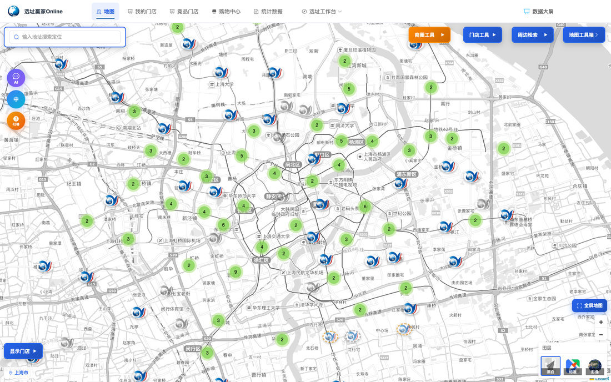
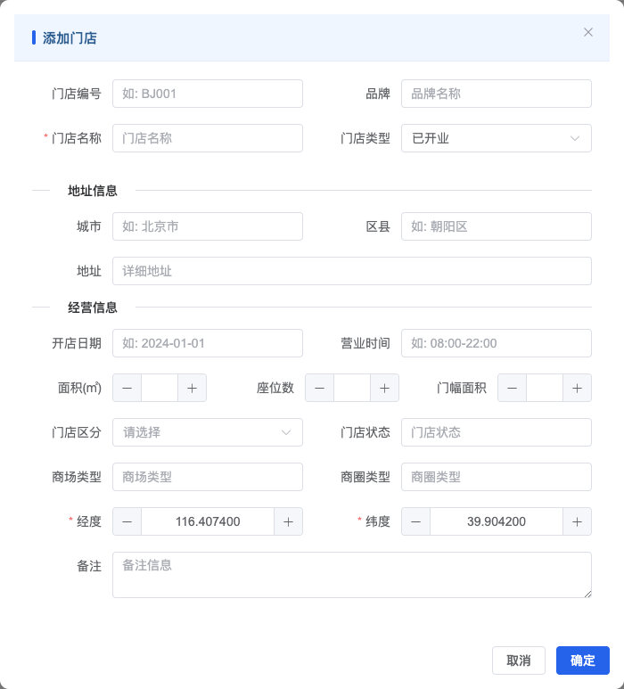
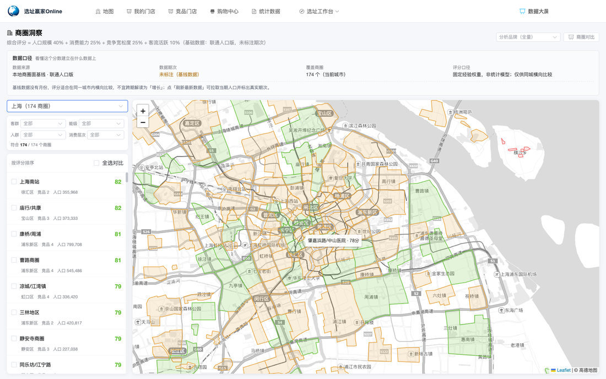

选址赢家Online
用户手册
v3.2.0
系统地址：https://mka-online.cn
更新日期：2026年11月11日
1. 产品概述
2. 快速入门
3. 门户导航
4. 地图中心
5. 门店管理
6. 竞品/品牌/购物中心管理
7. 个人中心与购买履历
8. 智慧足迹联通人口分析
9. 品牌图标管理
10. 统计数据管理（Shapefile）
11. AI助手
12. 数据大屏
13. 选址工作台（城市洞察 / 商圈洞察 / 销售预测）
14. 集团 / 子公司与数据同步
15. API 开放（第三方调用）
16. 常见问题与排错
17. 版本更新说明
18. 近期功能更新（2026 年 11 月）
1. 产品概述
选址赢家Online（Report4biz）是一套面向连锁门店选址与商圈分析的 WebGIS 商业智能平台。系统以地图为核心，整合门店管理、人口分析、竞品追踪、AI 智能辅助等能力，帮助选址决策者做出更高效的商圈判断。
核心能力
能力 | 说明 |
🗺️ 多源地图 | 高德矢量、腾讯地图、卫星影像三种底图自由切换 |
📊 人口分析 | 基于Shapefile的常住人口分布 + 智慧足迹联通人口API |
🤖 AI助手 | 集成豆包大模型，自然语言指令控制地图操作与数据分析 |
📈 购买履历 | 完整记录每次人口数据查询，支持结果导出和微信分享 |
👥 多用户 | 管理员配额分配，多用户独立工作 |
🧭 选址工作台 | 城市洞察 / 商圈洞察 / 销售预测（VIP 专属），辅助城市与商圈决策 |
📺 数据大屏 | 门店与竞品全景展示，KPI 与图表每小时自动刷新 |
技术说明
- 系统在浏览器中运行，推荐使用 Chrome / Edge 最新版本
- 地图坐标采用 GCJ-02（火星坐标系），人口查询时自动转换为 WGS84
- 数据存储在云端服务器，无需本地安装
2. 快速入门
2.1 注册与登录
- 打开 https://mka-online.cn
- 如无账号，点击「没有账号？去注册」填写用户名、密码、邮箱完成注册
- 使用用户名和密码登录
- 登录后进入地图主界面
- 忘记密码：在登录页点「忘记密码」，输入注册邮箱，按邮件里的链接设置新密码（链接 30 分钟内有效）
2.2 批量导入门店
- 点击顶部导航「我的门店」进入门店管理页
- 点击「导入门店」→「导入」按钮
- 选择CSV文件（支持UTF-8/GBK编码）
- 点击「确定导入」完成批量导入
💡 CSV模板格式：点击「导入门店」→ 下载模板，按模板格式填写数据
2.3 首次地图操作
- 点击鼠标滚轮拖动地图
- 滚轮缩放
- 右下角切换底图（高德/腾讯/卫星）
- 点击地图上门店图标查看详情
3. 门户导航

3.1 顶部导航栏
菜单项 | 页面 | 说明 |
地图 | / | 主地图操作中心 |
我的门店 | /data | 门店数据表格管理 |
竞品门店 | /competitors | 竞品数据管理 |
品牌门店 | /brand-stores | 品牌门店数据管理（仅管理员可见） |
购物中心 | /shopping-centers | 购物中心数据管理 + 餐饮商户 |
统计数据 | /shapefiles | Shapefile文件管理 + 城市宏观数据 |
选址工作台 | 下拉菜单 | 城市洞察 / 商圈洞察 / 销售预测（VIP 专属） |
数据大屏 | /dashboard | 门店与竞品全景展示，每小时自动刷新；入口在顶栏最右侧 |
3.2 用户下拉菜单
点击右上角头像区域展开：
选项 | 功能 |
个人中心 | 查看账户信息、配额、购买履历；提交 VIP 试用申请与配额采购申请 |
设置图标 | 管理品牌地图图标 |
设置模板 | 上传 Excel 报表模板（仅管理员显示） |
购买履历 | 快捷跳转到购买履历页 |
导出报表 | 按订单导出 Excel / PDF；勾选多条时自动打包为 ZIP |
数据同步 | 集团 / 子公司数据同步（仅集团账号显示） |
剩余次数 | 显示当前联通人口数据剩余次数（每 60 秒自动刷新） |
退出登录 | 安全退出系统 |
4. 地图中心
地图页面是系统的核心工作区。
4.1 左上角：地址搜索
- 输入关键词搜索地址，调用高德API自动完成识别
- 选中搜索结果后地图自动定位到该位置
4.2 左侧面板：商圈工具
周边检索
- 在地图上绘制圆形或多边形
- 搜索范围内的POI（餐饮、购物、教育等）
商圈人口分布
- 点击「选择中心点」后在地图上点击设置圆心
- 设置1~3层半径（公里）
- 分析该范围内的常住人口分布
- 半径之外，也可按「驾车 / 步行可达（分钟）」圈定范围，详见 4.7
常住人口对比
- 选择2~5家门店，设置统一分析半径，自动生成对比表格与图表
联通人口（智慧足迹）
- 见第8章详细说明
4.3 右侧工具栏：地图工具箱
工具 | 图标 | 功能 |
添加门店 | 📍 | 在地图上点击添加门店 |
测量距离 | 📏 | 点击绘制折线测量距离 |
测量面积 | 📐 | 点击绘制多边形测量面积 |
热力图 | 🔥 | 显示门店分布热力渲染 |
聚合显示 | 🔵 | 门店聚合/非聚合切换 |
人口分析 | 📊 | 智慧足迹人口分析入口 |
清除绘制 | 🗑️ | 清除所有绘制图形 |
门店对比 | ⚖️ | 选择2~5家门店进行多维度对比 |
门店排名 | 🏆 | 按到访/居住/工作人口进行门店排名 |
开店余地 | 📍 | 分析某城市各网格的门店密度与开店空间 |
4.4 门店类型开关
- 我的门店（默认开启）/ 竞品门店（默认关闭）/ 品牌门店（默认关闭）/ 购物中心（默认关闭）
4.5 门店弹窗（POPUP）
- 门店信息：编号、类型、门店状态、商场类型、商圈类型、面积等
- 操作按钮：编辑、删除、联通人口、人口分布、竞品分布
- ⭐ 标记表示该门店有购买履历记录
4.6 图层切换（右下角）
- 高德地图（默认）/ 腾讯地图 / 卫星影像
- 开店余地：在地图上圈出「机会点」（可按城市、半径、我的门店数、竞品门店数、人口条件筛选）
- 常住人口分布：以选点为圆心统计居住人口，最多同时 3 个半径圆，支持单位与色块设置
- 高精人口分布：250 米网格的高精度人口（仅管理员可见）
- 周边商业配套：对选定点位做周边商业配套打分
- 常住人口对比：选择 2~5 家门店，按统一半径对比人口
- 商圈内点位：在地图上点击位置，列出半径内的我的门店与竞品门店
📖 延伸阅读：《3. 地图操作》—— 测量距离/面积、周边门店检索、城市商圈显示
📖 延伸阅读：《4.1 开店分析｜开店余地》《4.2 开店分析｜竞品分布》《4.3 开店分析｜人口分布》《4.4 开店分析｜门店对比》（图文步骤）
💡 小技巧：在地图上右键可快速唤出「添加门店 / 定位门店 / 商圈内点位 / 周边商业配套 / 常住人口分布 / 联通人口 / 锁定地图」。
4.7 人口分布弹窗（常住人口 / 高精人口）
从左侧「商圈人口分布」、门店弹窗的「人口分布」或地图右键「常住人口分布」进入。高精人口分布是 250 米网格数据（仅管理员可见）。弹窗内依次设置圆心、范围口径、统计字段、色块与数值分级。
范围口径（三选一）
- 半径圆：填 1~3 个半径（可切换公里 / 米），适合「以店为圆心看 N 公里」。
- 驾车可达（分钟）：从圆心向 24 个方向按真实路网探测行车耗时，连成可达范围；可填 1~3 个时间档，建议 5 / 10 / 15 分钟。
- 步行可达（分钟）：同一套探测链路，建议 10 / 20 / 30 分钟（10 分钟约 600 米）。
- 探测按常规路况 / 常规步行路线估算，不等于导航 App 的实时时长；时间档是「最多开这么久」，实际边界由路网决定，形状通常不规则。
- 三个时间档共用同一批探测，不会因此多消耗次数；每点一次「分析」消耗 1 次。
- 口径选项下方显示「今日剩余」：免费 / 试用每天 5 次、VIP 每天 30 次、管理员不限，次日 0 点恢复；分析失败不扣次数。
免费版与 VIP 版看到的内容
- 免费 / 试用：只画可达范围轮廓，给出每档的面积与人口总数。
- VIP 及以上：网格着色、色阶图例、分年龄段人口、网格数字标签、手动微调范围全部开放。
- 免费版面板下方有「申请开通 VIP（30 天试用）」按钮，提交后在个人中心查看审核进度。
圆心沿用与改档位
- 分析成功后再次打开弹窗，会提示「沿用上次分析的圆心」，改时间档或半径直接重算即可。
- 点「重新选点」可换圆心；换圆心或换口径后，之前手动微调过的形状会被清空。
- 只改某一档（例如把 10 分钟改成 15 分钟）时，只有该档重新探测，其余档沿用上次结果，速度更快。
色块与数值分级
- 「设置色块」选择配色方案，右侧带色条预览。
- 「数值分级」两种：等值均分（每档数值跨度相等，图例可直接读区间）、等频分档（每档格数相等，长尾数据层次更分明）。
- 地图上方的色阶图例与色块同源：图例写的区间就是色块实际使用的切分点，可据此判断每格大致人口。
- 图例在统计表格上方，表格过长时单独滚动，不影响图例。
网格数字标签
- 「网格标签」开关（显示 / 隐藏）只控制网格上的数字，关掉后只留色块。
- 关闭即时生效，不需要重跑分析；同样的开关也出现在地图统计面板上。
- 地图放大到 12 级以上才显示标签（格子太密时会自动隐藏）。
手动微调与常用范围（VIP）
- 画出可达范围后，可拖动边界顶点微调形状（例如去掉被高架隔断的一块）。
- 面板会标注「（10 分钟已手调）」；之后重算只更新被拖动的那一档。
- 调好的范围点「保存」起名存为常用范围（默认名如「驾车 · 5/10/15 分钟」）；下次点「载入常用范围」直接套用，按当前数据重算，不用重新探测。
- 常用范围每人最多 20 个，可删除；仅 VIP 及以上可用。
5. 门店管理

5.1 数据视图（/data）
门店数据以表格形式展示，支持全部CRUD操作。
筛选栏：关键词搜索、门店类型、城市、区县、门店区分、品牌、门店状态、商场类型
表格列：编号、品牌、门店名称、类型、城市、区县、门店状态、区域经理、店长、面积、座位、商场类型、门店区分、操作
5.2 门店操作
操作 | 说明 |
编辑 ✏️ | 修改门店信息 |
购买履历 📋 | 查看该门店的联通人口查询记录 |
删除 🗑️ | 删除该门店 |
勾选框 | 可选择多个门店进行批量操作 |
5.3 批量操作
操作 | 说明 |
批量删除 | 删除所有勾选的门店 |
全清除 | 删除当前用户所有门店 |
5.4 导入/导出
- 导入：上传CSV文件批量导入门店数据
- 地址解析：对没有坐标的门店，基于地址自动解析经纬度
- 导出：将当前门店数据导出为CSV文件
📖 延伸阅读：《2. 门店可视化》—— 显示/隐藏各图层、热力图与聚合、网点优化（VIP 专属）、分区域查询门店
5.5 门店清洗（重复录入检测）
入口：门店管理 → 导入门店 →「门店清洗」。导入门店后系统也会主动询问是否立即清洗。
只比同一品牌、50 米以内的门店，并分三档：
- 重复（编码相同）：同一条记录录了两遍，可合并。
- 双店型（编码不同、面积相差 2 倍以上）：同一商场里的大店（堂食）＋小店（外卖 / 档口），是两家真店，不提供合并。
- 待确认（面积缺失或相差不大）：系统判不出来，需要人工看一眼。
50~300 米的邻近门店只在「邻近门店」列表里展示，不提供合并按钮；跨品牌一律不报。
合并与撤销
- 组内选一条保留，点「合并为一家」，确认框会写明「保留 X，隐藏 Y（共 N 条）」。
- 合并只是隐藏，不删除数据；门店管理列表、门店体检、商圈统计中不再重复计数。
- 合并后顶部显示「已把 N 条合并进「X」」，点「撤销」立即恢复。
- 若被合并的门店已录入销售记录，系统会拒绝合并，并提示先处理销售数据。
- 判定为「确认是两家」的组不再提示；想恢复提示，在列表清空后点「恢复这些提示」。
顶部统计
- 门店记录 / 可评估 / 疑似重复组数 / 双店型组数 / 冗余记录 / 去重后独立门店 / 缺坐标跳过。
- 门店数量过多时会提示按城市分批处理。
5.6 门店体检
入口：门店管理页右上角「门店体检」，也可直接访问 /store-checkup。本页免费、不调用任何计费接口；只统计本账号的门店，跨品牌不参与判断。
页面分两块：几何结构（坐标、间距、店型 —— 只看「密不密、有没有贴在一起」）与门店信号灯（以每家门店坐标为圆心、按半径判断自我蚕食与竞争密度 —— 回答「先看哪几家」）。两块都看不出「赚不赚钱」，那需要录入销售数据。
复核阈值与 KPI
- 右上角「复核阈值」可选 300 米（默认）/ 500 米 / 1 公里，改后点「重新计算」；它决定「需复核」的距离口径。
- KPI：门店总数（可判定 N 家）、同址组（<50 米同品牌）、需复核（≤阈值）、中位最近同品牌距离、销售记录行数。
门店信号灯规则
- 自我蚕食：最近同品牌 ≤300 米记 +3、≤800 米记 +2；同址双店型不计分。
- 竞争密度：门店 800 米内同业态竞品 ≥3 家记 +2、≥6 家记 +3。
- 两条都命中＝红灯；命中一条＝黄灯；都没命中＝绿灯。
- 缺经纬度、或该城市还没有竞品点位，显示未评估 —— 这是「没算过」，不等于低风险，不要读成绿灯。
- 「扎堆组」把同品牌两两 ≤800 米连通的门店归成一团，便于发现成片开店。
列表、复核清单与完备度
- 风险列表可按「含未评估」「只看红黄灯」筛选，先列风险最高的 20 家、可翻页；点门店名在地图上定位。
- 「需复核清单」列出阈值内的同品牌成对门店：双店型不建议合并，疑似需人工判断；点门店名定位，确认「是同一个门还是隔壁门」。
- 「数据完备度」逐项说明销售记录、门店区分、营业面积、经纬度缺什么、影响哪条结论、去哪里补。
导出报告
- 「导出报告」可选 Excel（全量明细） 或 打印版（可在浏览器另存为 PDF）。
- Excel 含四部分：门店结构（几何）、信号灯明细、数据完备度、口径说明，与页面上的数字同源。
5.7 批量补「门店区分」
入口：门店管理 → 导入门店 →「补门店区分（N）」，括号内是待补家数。
门店区分是选址形态，共 9 项：社区店 / 临街店 / 商场店 / 写字楼店 / 交通枢纽店 / 校园店 / 景区店 / 专业市场店 / 履约店。它不是菜系业态。
两种补法
- 按品牌批量：选品牌（括号内为该品牌待补家数）＋ 门店区分，点「套用到该品牌」，只填进还没填的门店，不覆盖已有值。
- 逐行或勾选：勾选多家后「统一设为」；也可直接在下拉里单行修改。
约束
- 只改本账号的门店；集团下发的只读门店标「集团下发·只读」，不可在此修改（需在集团侧补）。
- 已合并隐藏的门店不参与；把下拉清空不会清掉库里已有的值。
- 单次提交上限 500 家。
- 门店区分只影响销售预测里「参照店类型匹配」的加分项 —— 不填也能出预测，填了参照店更贴近。
6. 竞品/品牌/购物中心管理
6.1 竞品门店（/competitors）
- 管理竞争对手门店信息，支持按品牌、城市、关键词筛选，支持导入/导出/批量删除
6.2 品牌门店（/brand-stores）
- 管理品牌下的门店信息，支持按品牌、城市、关键词筛选，支持导入/导出/批量删除/全清空
6.3 购物中心（/shopping-centers）
- 管理购物中心数据，支持按城市、关键词筛选，支持导入/导出/批量删除
餐饮商户Tab：
- 点击商场名称进入详情，在「餐饮商户」Tab中查看商户列表
- 支持按归类（快餐、火锅、日料等）筛选商户
- 支持按楼层、商户名称关键词搜索
- 商户对比：选择2个以上商场，点击「商户对比」查看分类饼图对比
- 支持CSV导入商户数据
7. 个人中心与购买履历
7.1 个人中心（/account）
用户信息区域：用户名、公司、邮箱、角色，可修改邮箱和密码
配额信息卡片：
- 当前配额 / 当前已使用 / 剩余次数（卡片上另有「刷新配额」「充值履历」「购买履历」按钮）
- 剩余次数不足时，点「申请采购配额」提交采购意向单；也可直接联系商务：徐经理 138 1779 1741
- 管理员可通过用户管理页面调整配额
- 「体验 VIP 用户」：填写公司名 / 所在部门 / 联系人 / 电子邮箱 / 联系电话提交申请，审核通过后自动开通 30 天 VIP 试用
- 提交采购或试用申请后，卡片上会出现「查看申请状态」，可随时查看处理进度
购买履历表格：
- 展示所有历史查询记录，每条记录包含：ID、门店名、类型、半径、数据年月、查询时间
7.2 筛选购买履历
- 按门店名/ID、门店类型、城市、区县、半径、数据年月筛选
7.3 查看查询结果
- 信息区：订单ID、查询时间、坐标位置、半径、数据年月
- 数据表格：12个核心人口服务指标（人口总量、居住人口、工作人口、到访人口等）
- 操作按钮：数据洞察（AI分析）/ 微信分享 / 导出报表
7.4 微信分享
- 系统自动截图 → 预览窗口 → 复制图片/保存图片分享到微信
8. 智慧足迹联通人口分析
基于中国联通智慧足迹数据，查询指定位置周边的人口特征。每次查询消耗配额。
8.2 可用服务指标
代码 | 指标名称 | 说明 |
1001 | 人口总量 | 指定半径内的总人口数 |
1004 | 夜间驻留人口 | 22:00-06:00 驻留人口 |
1005 | 工作人口 | 工作日在区域内工作的活跃人口 |
1006 | 到访人口 | 非居住/工作人员之外的访客 |
1007 | 外省客流 | 源自外省的访客数量 |
1008 | 娱乐人口 | 休闲娱乐场所到访人口 |
1009 | 年龄段分布 | 各年龄段人口占比 |
1010 | 性别比例 | 男女占比 |
1011 | 收入水平 | 人口收入分布 |
1012 | 消费水平 | 消费能力分布 |
1013 | 出行方式 | 交通出行方式分布 |
1014 | 停留时长 | 停留时间分布 |
1015 | 来源分布 | 客流来源地分布 |
8.3 使用方法
单个门店查询：
- 在地图上点击门店 → 弹窗中点击「联通人口」→ 设置半径 → 选择数据年月 → 购买
批量查询：
- 我的门店页面 → 勾选门店 → 批量购买 → 设置半径 → 确认执行
💡 注意：一份订单=1家门店×1个半径，例如4家门店×2个半径=8次查询
8.4 配额管理
- 总配额由管理员设置；每次成功查询扣减 1 次，次数不足时，可在「个人中心 → 申请采购配额」提交采购意向单（受理不等于到账，充值到账后点「刷新配额」即可看到）
- VIP / 试用账号与普通账号的 AI 助手额度不同，详见第 11 章
- 查询结果为空数据时自动返还
📖 延伸阅读：《1. 联通人口报表》—— 从导入门店到购买、导出联通人口报表的完整图文步骤
9. 品牌图标管理
- 访问方式：右上角头像 →「设置图标」或访问 /brands
- 输入品牌名称，选择图片文件（jpg/png/gif/webp/svg，2MB以内），点击上传
- 每个用户上传专属图标，管理员图标对所有用户可见
10. 统计数据管理（Shapefile）
10.1 上传数据
- 进入「统计数据」页面，上传ZIP格式的Shapefile文件，系统自动解析为GeoJSON
10.2 查看与查询
- 查看文件名称、字段数、要素数、上传时间
- 支持对数值字段进行多条件筛选（>/>=/</<=/=/!=）
10.3 共享
- 管理员上传的数据对所有用户可见，个人上传的数据仅自己可见
10.4 在地图中的应用
- 商圈分析工具使用Shapefile数据按面积比例计算圈内人口分布
10.5 城市宏观数据Tab
- 在「统计数据」页面切换至「城市宏观数据」Tab
- 查看全国30个重点城市的宏观经济统计数据（GDP、增速、人均GDP、常住人口、人均可支配收入、社零总额）
- 支持按省份筛选、关键词搜索；管理员可编辑和添加城市数据
- 点击城市名称自动跳转到地图并显示城市边界
11. AI助手
点击页面右下角的AI图标，打开对话浮窗。AI助手基于豆包大模型（doubao-seed-2-1-pro-260915）。
11.2 支持的指令
门店筛选类
- 显示我的门店中上海的已开业的商场店
- 显示竞品门店中品牌为麦当劳的
- 显示购物中心中评级为A级的
地图定位类
- 定位到上海市
- 定位到南京西路
图层控制类
- 显示竞品门店
- 隐藏购物中心
- 只显示品牌门店
POI搜索类
- 搜索周围500米的咖啡店
- 在南京西路附近搜索餐厅
- 在新天地附近搜索便利店
数据分析类
- 分析人民广场周边的人口分布
- 对比门店A和门店B的人口数据
- 门店人口排名TOP10
可达范围类
- 威宁路店 开车 8 分钟能覆盖多少人口
- XX 店 步行 10 分钟的人口
- 把 A 店从半径 2 公里改成驾车 10 分钟再看一次
- 说「开车 / 步行 N 分钟」才会按可达口径算；只说「半径 2 公里」仍按半径圆。每分析一次消耗 1 次可达探测额度（免费 / 试用 5 次/天、VIP 30 次/天），AI 会先说明。
城市数据查询类
- 上海GDP多少
- 北京的人口和人均收入
商场商户查询类
- 浦江城市生活广场有哪些餐厅
- 对比浦江城市生活广场和颛桥万达的商户
开店余地分析类
- 上海的开店余地怎么样
- 北京还有开店空间吗
11.3 额度与限次说明
AI 助手按月限次，额度按账号角色区分：
- 管理员：不限次数
- VIP 用户：每月 1000 次
- VIP 试用：每月 50 次
- 普通用户：每月 100 次
- 另有保护：每日最多 100 次、每分钟最多 10 次；全站月度预算用尽时 AI 会临时停用，下月 1 日自动恢复
- 高消耗查询（商场商户、开店余地）会占用较多额度，建议在页面中自助操作
11.4 使用技巧
- 使用自然语言描述需求即可
- AI会自动调用地图工具执行操作
- 操作结果会通过弹窗或地图展示
- 如果AI未准确理解，可以重新描述或手动操作
- AI 的人口分析只作用于「我的门店」里已有的门店，需要先有该门店记录
12. 数据大屏
数据大屏是面向汇报与实时监控的展示页面，所有登录用户均可使用。
12.1 打开与退出
- 入口：顶部导航栏最右侧的「数据大屏」按钮；也可直接访问 /dashboard
- 退出：点击右上角「退出大屏」，或按 Esc 键
12.2 页面构成
- 顶部信息区：环比标签「新增门店环比（上月 vs 上上月）：↑/↓ N%」、实时时钟、「更新 HH:MM:SS」、语言切换（中文 / 日本語 / English）、「退出大屏」
- KPI 卡片（8 张）：在营门店、竞品门店、闭店门店、竞品数量、覆盖省份、竞品省份、覆盖城市、竞品城市
- 图表：门店类型分布（饼图）、门店城市（在营）TOP10、竞品品牌 TOP10
- 地图区块「全国门店分布」：全国门店与竞品分布
- 折叠区：「数据表」（名称 / 数量 / 占比）、「标记列表（N）」
- 底部：数据简报（滚动播报，如「全国共 N 家门店、M 家竞品 · 覆盖 C 个城市 · 累计购买 P 次」）
12.3 地图与图层
- 图层开关「我的门店」「竞品门店」均可展开子项：我的门店按「已开业 / 重点候选 / 一般候选」，竞品按品牌
- 地图缩放会自动切换聚合层级：远景显示「省级聚合 · 放大查看城市」，放大后切换为城市级聚合
- 地图为纯展示（不响应点击）；门店明细请查看「标记列表」与「数据表」
12.4 数据刷新
- 页面数据每小时自动刷新一次，顶部「更新 HH:MM:SS」即最近一次刷新时刻
- 若显示「暂无数据」，表示当前账号还没有可展示的门店或竞品数据
13. 选址工作台（城市洞察 / 商圈洞察 / 销售预测）

顶部导航「选址工作台」是一个下拉菜单，收纳三个决策类工具。其中「销售预测」为 VIP 专属功能，非 VIP 账号在菜单中会看到 🔒VIP 角标。
13.1 城市洞察
用于回答「下一座该进入的城市是哪座」。
入口：选址工作台 →「城市洞察」（/market-map）
评分模型：市场机会评分 = 市场规模 × 竞争强度 × 品牌空白 × 消费潜力
等级 | 分数区间 | 建议 |
|---|---|---|
优先进入 | ≥ 75 | 建议优先布局 |
可观察 | 50 - 74 | 持续观察 |
谨慎 | < 50 | 谨慎进入 |
操作步骤
- 页面顶部查看 KPI：覆盖城市、优先进入、可观察、谨慎、涉及省份
- 左侧「省份机会指数」查看各省机会排名（括号内为该省最优城市）
- 点击某省份条目 → 右侧「城市机会排行榜」按省筛选（再点一次取消筛选）
- 点击排行榜中的城市行 → 右侧弹出「城市 · 市场分析」详情抽屉
城市机会排行榜列：#、城市、省份、面积(km²)、下辖区县、GDP(亿)、GDP增速、人口(万)、我的店、竞品、市场机会、建议
城市详情抽屉：机会评分（0-100）、评分维度明细（市场规模 / 竞争强度 / 品牌空白度 / 消费潜力，各带权重说明）、城市基本面（面积、下辖区县、常住人口、GDP、社零总额、人均可支配收入、人均消费支出、城市等级、我的门店、竞品门店、品牌门店）
权重设置（页面右上角「权重设置」）
- 拖动四个滑杆调整相对重要性：市场规模（人口×社零）、竞争强度（竞品密度越低越优）、品牌空白度（本品牌渗透率低）、消费潜力（收入+支出）
- 权重会归一化为总和 100%，分数实时重算
- 「保存并应用」后提示「权重已更新，榜单已重算」；「恢复默认」可回到默认权重（市场规模 30% / 竞争强度 25% / 品牌空白度 25% / 消费潜力 20%）
13.2 商圈洞察
用于在已选城市内挑出「最值得进入的商圈」。
入口：选址工作台 →「商圈洞察」（/district-insight）
综合评分构成：人口规模 40% + 消费能力 25% + 竞争强度 25% + 客流活跃 10%（页面顶部会标注数据基准月份，如「数据时间 2022-04」）
操作步骤
- 左栏「选择城市」下拉选择城市（按一线城市 / 新一线城市 / 二三线城市分组，括号内为该城市商圈数量）
- 地图自动缩放至该城市商圈范围；点击地图上的商圈边界即可选中，浮签显示「名称 · N分」
- 左栏列表按评分排序，条目上显示「竞品 N」「人口 N」
- 列表上方可按客群 / 能级 / 人群 / 消费层次筛选（四项单选，可组合）；选项按当前城市实际存在的取值生成，切换城市会自动清空。
- 筛选只做过滤、不改变排序（仍是综合评分降序）；地图上不符合条件的商圈变淡而不是消失，保留整城参照；点「清空筛选」恢复。
- 选中商圈后查看右侧「商圈详情卡」（见下）
商圈详情卡包含
- 四个维度进度条：人口规模、消费能力、竞争强度、客流活跃
- 画像标签：客群、能级、居民特征（旧数据没有这几项时整行不显示）
- 事实项：居住人口(估算)、工作人口(估算)、到访人次、竞品门店、我的门店
- 商圈内购物中心：显示「📌 名称 ⭐ 评级」，点击可跳转到地图并弹出图钉；该购物中心无坐标时会提示「该购物中心暂无坐标，无法定位」
- 按钮「刷新最新数据」：拉取最新月份数据
关于「刷新最新数据」（会消耗配额）
- 点击后确认框提示「将从『剩余次数』中扣除 1 次……确定刷新吗？」
- 成功：「刷新成功（消耗 N 次，剩余 M 次）」
- 若该月份数据已在缓存中：「缓存命中，未消耗次数（数据已是最新月份）」
- 剩余次数不足时会给出提示，请先按第 10 章处理配额
商圈对比
- 勾选 2-5 个商圈（不足 2 个提示「请至少选择 2 个商圈」，超过提示「最多对比 5 个商圈」）
- 点击「商圈对比 (N)」打开对比表：商圈、综合评分、人口规模、居住、工作、到访人次、竞品数、数据
- 表中绿色高亮为该列最优值；脚注说明「居住(估)」「工作(估)」为联通商圈总人口按各半拆分的近似值
13.3 销售预测（VIP 专属）
基于已开业门店的真实销售，预测候选门店的年销售额，并模拟新店对周边门店的蚕食影响。
权限与开通
- 可用：VIP 用户、VIP 试用用户、管理员
- 普通用户打开该页只会看到开通引导，可点「前往个人中心申请试用」；在个人中心点「体验 VIP 用户」提交申请，通过后自动开通 30 天 VIP 试用
引擎自动升级：L1 类比 → L2 回归 → L3 机器学习。系统按已录入的有效销售样本量自动升级，样本越多、预测越准；升级到 L3 才会提供蚕食模拟与归因。
页面构成与操作
- 样本量提示条：显示当前样本行数（含已开业店数）与距下一档还差多少，可点「去录入销售」补录；若部分记录只填了金额区间（档位估值），系统按区间中点参与测算，并提示预测误差范围会比纯精确样本更大
- 候选门店工具条：搜索「搜索候选门店」、按「城市」筛选、按「已购联通人口 / 未购买」筛选；右侧显示候选门店数量
- 候选门店表：编号、门店名称（已购联通人口的会带标签）、城市、类型（重点候选 / 一般候选）、面积(㎡)、操作；点「预测」按钮出结果
- 参照店圈定（进阶，可选）：默认「系统自动推荐」；勾选想用作类比基准的参照店后变为「自定义（已圈定 N 家）」，勾选即保存在本机（按账号隔离）；点「恢复系统推荐」回到自动模式
- 预测结果卡：门店名 · 年销售额预测，含引擎标签（L1 类比 / L2 回归 / L3 机器学习）、主指标「N 万元 / 年」、置信度 ±N%、参考区间「X ~ Y 万元（含外卖口径）」，以及匹配方式、参照店、商圈归属、常住人口、点位环境、参考门店 N 家
- 结果明细：列出特征相似（或类比参照）门店的真实销售；L3 额外提供「对周边 N 家店影响（3km 内，新店开业蚕食模拟）」与「预测归因（特征重要性 Top4）」
注意事项
- 没有候选门店（重点候选 / 一般候选）时会提示「暂无候选门店」
- 预测失败会提示「预测失败：……」或「暂时无法预测」，可稍后重试
14. 集团 / 子公司与数据同步
平台支持「集团 ↔ 子公司」多账号协作：集团可以把门店与竞品数据下发给子公司，子公司也可以把数据上交给集团，全程按需手动执行、先预览后确认。
14.1 概念与绑定关系
- 绑定关系由平台管理员在「用户管理 → 集团 / 子公司」中建立
- 新建集团：填写「集团名称」与「总部账号」
- 提示：总部账号不会成为「组织成员」，其可用额度仍由平台配额池统一兜底
- 添加子公司：把子公司账号加入该集团
- 成员表可逐家设置：「可接收下发」「可被集团拉取」「管辖范围」「知情确认」（已确认 / 待确认）与「已分配额度」
- 解绑子公司不会改动该账号的已分配额度；集团下还有子公司时不允许解散集团（会提示「集团下还有子公司，不能解散」）
14.2 数据同步页（/data-sync）
入口：右上角头像 →「数据同步」（仅集团账号可见）
页面原则：「按需手动同步」—— 先预览、后确认，每次留痕可审计；同步过来的门店为只读镜像。
页面包含六个区块：
- 从集团同步：把集团下发的门店 / 竞品拉取到本账号
- 从子公司同步：集团侧把子公司数据汇总上来
- 预览明细：同步前先查看将发生的增删改，确认无误再执行
- 我已同步到的数据：查看已同步的行，可在此执行「脱离同步」或「移除副本」
- 同步历史：每次同步的时间与操作留痕
- 配额分配：管理成员可用额度
14.3 只读镜像与管辖范围（重要规则）
- 集团下发给你的门店与竞品是只读镜像：本地不能改、不能删（仍可录入销售），只能由集团更新或撤回。如需本地自管，可在「④ 我已同步到的数据」里脱离同步
- 脱离同步 → 转为本账号自有行，此后不再被来源覆盖；移除副本 → 只删本账号这一份，来源数据不受影响
- 管辖范围：只有当数据落在管辖范围内时才会被同步（越界自动丢弃）。管辖范围由各子公司自行设置，集团亦可代设或改派
- 集团可查看并维护你管辖范围内的门店数据（按城市；范围外的行看不到）
- 集团可查看你账号已购买的联通人口数据（购买履历），并做跨公司汇总与报表导出 —— 用的是你已经买过的数据，不会额外消耗你的配额
- 知情确认：需要成员本人在「数据同步」页点击确认（合规留痕，不可代签）。未确认就接收集团下发数据，会提示「请先在『数据同步』页完成知情确认，再接收集团下发的数据。」
- 竞品期次快照只支持「集团下发到子公司」，不支持「从子公司同步到集团」（竞品由集团统一导入，子公司不可自行上传竞品快照）
- 销售数据仅门店归属账号可见
14.4 非集团账号
若当前账号不属于任何集团，页面会显示「当前账号不属于任何集团」，并提示：
账号归属由平台管理员在「用户管理 → 集团 / 子公司」中绑定。
📖 延伸阅读：《5. 子公司数据同步方法》—— 设置管辖范围 → 预览 → 执行同步的图文步骤
15. API 开放（第三方调用）
本章面向平台管理员。普通账号看不到该入口。
15.1 功能定位
把平台的联通人口数据能力开放给第三方系统按接口调用，按次计费：60 元/次，最低 100 次起充。
入口：右上角头像 →「API开放」（/resale）
15.2 操作步骤
- 创建客户
- 填写「公司名称」「初始次数」；如需先联调，可勾选「测试模式」
- 提交后系统生成该客户的 API Key
- ⚠️ Key 已加密存储，完整 Key 仅在创建时显示一次，请立即复制交给客户
- 列表查看：公司名称、API Key、剩余次数、已用次数、状态（启用 / 停用）、创建时间
- 日常操作
- 充值：输入次数（最低 100 次起充，60 元/次），点「确认充值」
- 扣减：减少某客户的可用次数（扣减的次数会归还配额池）
- 用量：查看该客户的调用记录
- 停用 / 启用：临时关闭或恢复该客户的调用权限
- 删除：移除该客户
15.3 配额池
页面顶部显示配额池概览：上游总配额、用户页已分配、API页已分配、测试模式余额、剩余可分配。
- API 开放页与用户页共用同一批次配额（测试模式不占用真实配额）
- 充值按下单批次采购，具体余额以配额池显示为准
16. 常见问题与排错
16.1 登录相关
Q: 登录失败提示错误？
A: 请检查用户名和密码是否正确。如忘记密码，联系管理员重置。
Q: 登录后页面空白？
A: 尝试清除浏览器缓存（Chrome: 设置 → 隐私与安全 → 清除浏览数据）。
16.2 地图相关
Q: 地图加载不出来？
A: 检查网络连接，瓦片地图需访问外部CDN。如使用公司网络，确认是否限制了外部域名访问。
Q: 坐标位置不准？
A: 系统使用高德/腾讯地图（GCJ-02坐标系）。如从GPS获取的坐标（WGS-84）导入，会产生约500米偏差。
Q: 门店导入后地图上看不到？
A: 确认门店有正确的经纬度坐标，且「我的门店」图层开关已开启。
16.3 数据相关
Q: CSV导入失败？
A: 检查CSV文件编码（建议UTF-8），确保列名与模板一致。
Q: 数据修改后地图未更新？
A: 使用无痕模式刷新页面。浏览器缓存可能导致旧数据显示。
Q: 导出Excel打开乱码？
A: 使用Excel打开时选择UTF-8编码导入。
16.4 配额与查询
Q: 配额不足怎么办？
A: 联系管理员增加配额，或联系徐经理采购（电话/微信：138 1779 1741，邮箱：jyo@youshi-tech.com）。
Q: 查询结果显示空数据？
A: 可能该区域人口数据缺失。系统会自动返还配额，不会扣费。
Q: 批量购买速度慢？
A: 每个门店×每个半径需独立请求，Q: 提交了采购申请，什么时候能到账？
A: 受理不等于到账。我方与您确认合同与付款后，会由管理员在「用户管理」为您单独充值；到账后在个人中心点「刷新配额」即可看到剩余次数。
Q: 忘记密码了怎么办？
A: 在登录页点「忘记密码」，输入注册邮箱，按邮件里的链接设置新密码（链接 30 分钟内有效）。
大量查询需要时间。系统有缓存机制。
16.5 门店清洗 / 体检 / 可达范围
Q: 门店数比台账少了几家？
A: 可能做过「门店清洗」合并。合并只隐藏不删除，可在门店清洗里撤销；若相关提示已被「确认是两家」收起，点「恢复这些提示」重新查看。
Q: 门店体检全是绿灯，是不是说明布局没问题？
A: 绿灯只代表半径内没有同品牌贴身、竞品也不密集。缺经纬度或该城市没有竞品点位会显示「未评估」—— 那是「没算过」，不是「没问题」。
Q: 可达范围提示次数用完了？
A: 免费 / 试用每天 5 次、VIP 每天 30 次，次日 0 点恢复；分析失败不扣次数。需要更多可在面板点「申请开通 VIP（30 天试用）」，或联系管理员。
Q: 改了时间档，手调的形状没了？
A: 手调只对当前档位有效，改档位会重新探测。调好后点「保存」存为常用范围，下次直接载入（仅 VIP）。
16.6 其他
Q: 如何联系技术支持？
A: 联系系统管理员或项目维护人员。
Q: 数据安全吗？
A: 所有数据传输使用HTTPS加密，认证使用JWT Token。Q: 页面提示 404 或打不开？
A: 请检查链接是否输入正确；地址不存在时系统会显示 404 页面，可从页面上的按钮返回工作台或登录页。
Q: 分享出去的链接怎么打开？
A: 微信分享的链接打开后是只读的「联通人口数据分析报告」页面，无需登录；链接无效时会提示「分享链接无效」。
数据存储在云端服务器。
17. 版本更新说明
v3.2.0（2026 年 11 月 11 日）
新增第 18 章：多品牌竞品口径映射（自有 / 继承集团 / 显式全量 / 未配置四态），含配置弹窗、读时继承与同步前置警告。
v3.1.0（2026 年 11 月）
- 新增门店清洗：同品牌 50 米内检测重复录入，三档判定（重复 / 双店型 / 待确认），合并可撤销。
- 新增门店体检：几何结构 + 门店信号灯（半径骨架），含需复核清单、数据完备度与报告导出（Excel / 打印版）。
- 新增批量补门店区分，并新增「履约店」一项（现共 9 项）。
- 人口分布新增驾车 / 步行可达范围（分钟）、常用范围（VIP）、网格数字标签、色阶图例与富数值分级。
- 商圈洞察新增客群 / 能级 / 人群 / 消费层次四项筛选与画像标签。
- AI 助手支持「开车 / 步行 N 分钟覆盖多少人口」这类可达范围问法。
v3.0.0（2026 年 10 月）
- 收录集团 / 子公司数据同步、销售预测、商圈洞察、数据大屏等模块。
18. 近期功能更新（2026 年 11 月）
本章记录 2026 年 11 月已上线的多品牌竞品口径映射。功能以系统当前界面为准，完整操作可参考前面对应章节。
适用对象：一个账号下有多个自有品牌（例如同时经营两个餐饮品牌）。系统按「门店自有品牌」分别圈定竞品范围，竞品雷达、门店竞争数、网点优化、购买履历导出与开店余地共用同一口径，不再把不同品牌的竞品混在一个池子里。
配置入口：顶部导航「竞品门店」→ 页面上的「品牌竞品映射」。多品牌账号首次进入该页会先弹出配置弹窗，逐行配好后点「全部保存」才能继续使用该页；选址工作台、商圈洞察、网点优化不受弹窗影响。
四种状态：
自有配置：逐行为每个自有品牌勾选对应的竞品品牌，保存后只按这批竞品计数。
继承集团：本账号没配过、但所属集团配过时，读时自动继承集团映射，页面会显示继承状态。删掉本账号的配置是「回落继承」，不是回到全量。
显式全量：在映射里选「全部品牌（不筛选）」，表示明确不按品牌筛选，竞品取全量。
未配置：既没有自有配置也没有集团配置时按全量处理。
注意事项：
勾「该品牌暂无竞品」＝保存空集合，属于「已配置」，此后该品牌竞品数恒为 0，页面会用橙色提示；不要把它读成「没配」。
映射配置本身不随集团数据同步下发；同步的品牌白名单按对象收窄，存在未同步门店时会在同步前给出前置警告。
弹窗里的品牌指的是「竞品品牌」，不是自有品牌；保存后可在同一入口复查或调整。
文档版本：v3.2.0 · 最后更新：2026年11月11日